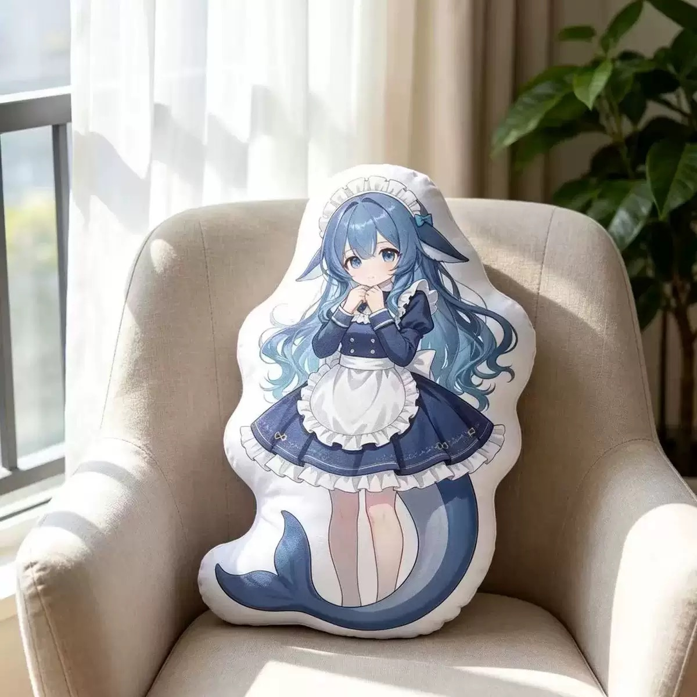

All designs / Design 02
Tall Body Pillow — Whale Maid Long Cushion
The tall cut: a full body-pillow proportion, head to flipper, resting upright in a linen armchair by a window. Best shape for back support on a desk chair or for leaning against a headboard — the whale tail curls out at the base as an extra padded foot.
- Design02 of 14
- ShapeTall body pillow (head-to-flipper die-cut)
- ColoursNavy, cream white, glacier-blue gradient hair
- FinishDye-sublimation printed plush face, soft short-pile fabric
- Photo1200 × 1200 JPEG, indoor daylight, neutral sofa / bedroom setting
- OrderingQuote on request — Telegram @DK88878
Want this design? Send the design number (02) plus your country to @DK88878 on Telegram and you'll get size options, fabric choices and a quote.
Message @DK88878 on Telegram